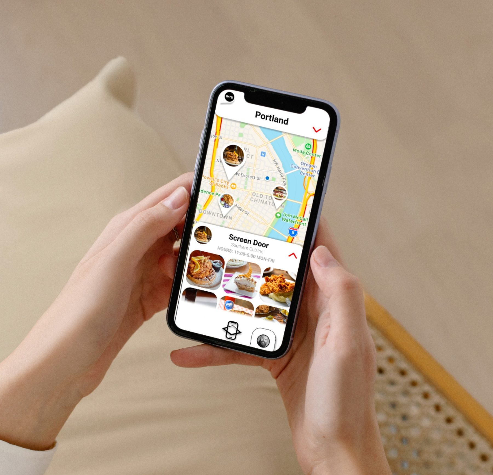
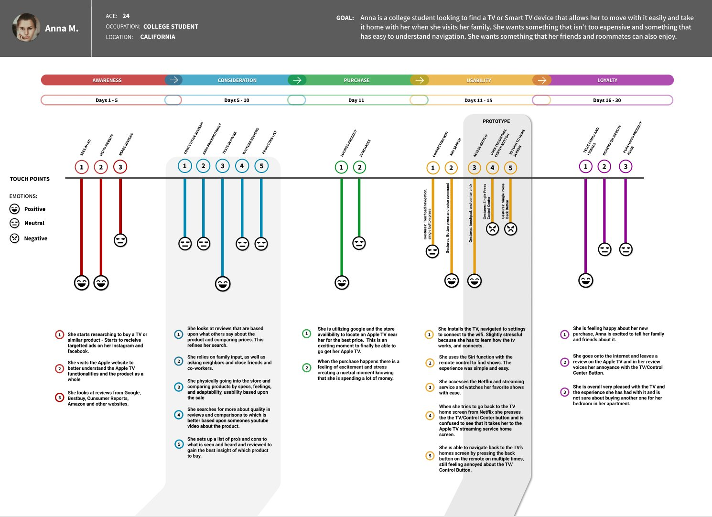
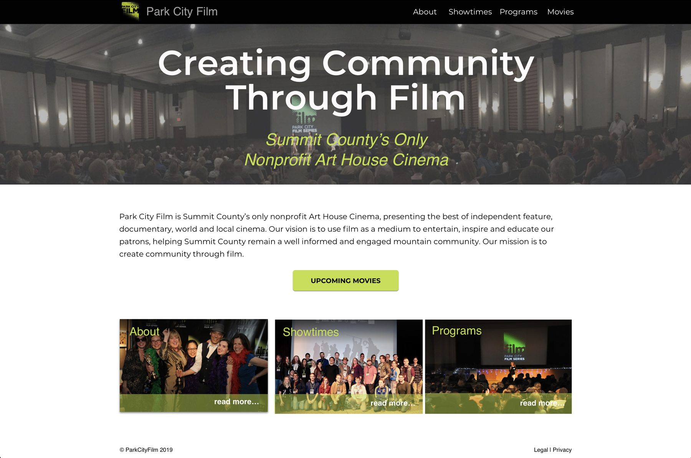
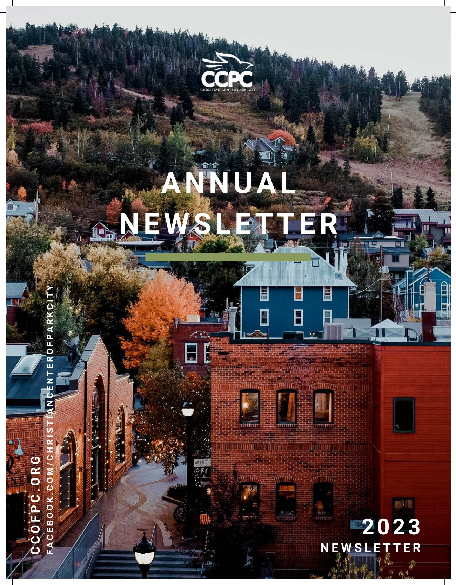
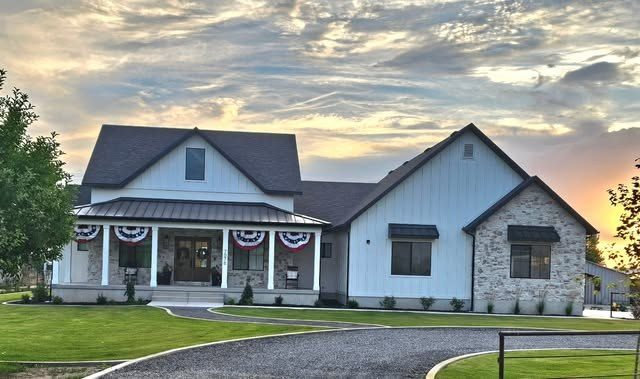
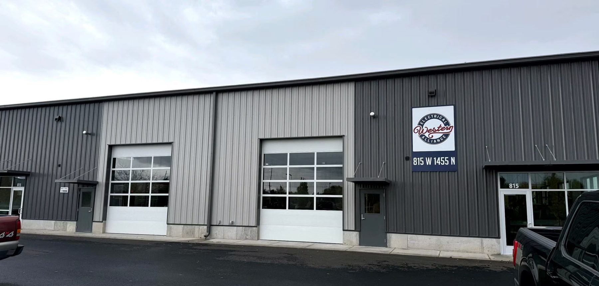

Product & interface design
End to end UX and UI in Figma, from flows and wireframes through to interfaces that are ready to hand to a developer. Research, structure and the small interaction details that make a product feel considered.
UX/UI and graphic designer in Utah, currently leading marketing and design at the Christian Center of Park City.
Product design, websites and campaign work. Two of these sites I designed and built front to back; the rest span mobile product, brand, print and interactive.

An app for learning about other cultures, races and communities, designed to remove the anxiety that stops people asking in the first place.

A travel catalog for finding things to do in a city. The brief asked for a product catalog; I turned it into a map with travel points attached.

A team audit of three home media centres. Feature audits, six personas, empathy maps and two journey maps, ending in a paper prototype that changes one button.

A brand campaign about players who go unrecognised, built as a fantasy basketball app that puts NBA and WNBA players on one roster.

Website for Summit County's only nonprofit art house cinema, organised around showtimes, programmes and the case for membership.

A 26 spread printed book about teams in history, with QR codes on the page that open augmented reality experiences.

Ongoing marketing and design across a multi-department nonprofit: campaign systems, annual reporting, event identity and social content.

Five interactive stops up American Fork Canyon for the National Park Service. We designed the experiences and the signage, and installed the wifi they run on.

Recruitment work across all ten departments of UVU's College of Engineering and Technology: a 48 page brochure, tension banner systems and social campaigns.

Five-page site for a custom home and concrete builder, structured around getting a homeowner from first look to quote request.

A six-section marketing site for a Northern Utah electrical contractor, with branch locations, a project gallery and a quoting path.
End to end UX and UI in Figma, from flows and wireframes through to interfaces that are ready to hand to a developer. Research, structure and the small interaction details that make a product feel considered.
Logos, type systems and the guidelines that keep a brand consistent once other people start using it.
Campaign concepts carried across email, social, print and web, with analytics behind them rather than guesswork.
Responsive, accessible sites designed and coded in HTML, CSS and JavaScript.
Brochures, collateral and environmental graphics, prepped properly for digital and traditional printing.
Four plus years across a product company, the National Park Service, a university marketing team and a nonprofit.
Marketing and Grant Manager
Work with teams across every department on marketing, graphic and UX design, social content and grant writing. Own how the organisation looks and sounds in public.
UX/UI Designer
Took part in the design process for the Timpanogos Cave Smart Trail up American Fork Canyon, on a team designing five experiences hikers can take part in on their phone while walking the trail. Worked to the Park Service's own guidelines and requirements throughout.
UX / Graphic Design Intern
Recruitment design across all ten departments of the College of Engineering and Technology: a 48 page programmes brochure, tension banner systems, and Instagram and Facebook campaigns. Figma and Illustrator.
Associate Designer
Part of a team preparing designs and logo marks applied to physical products through both digital and traditional printing processes.
Phone
801 995 5794